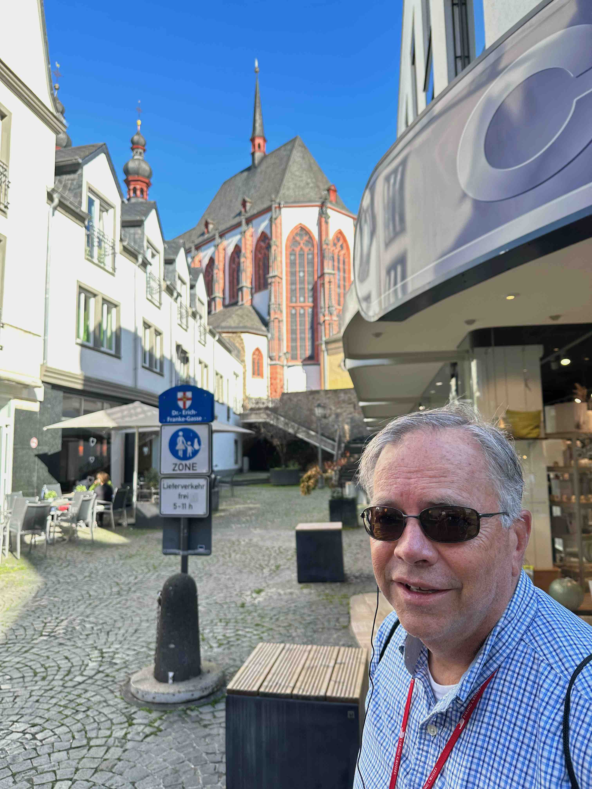
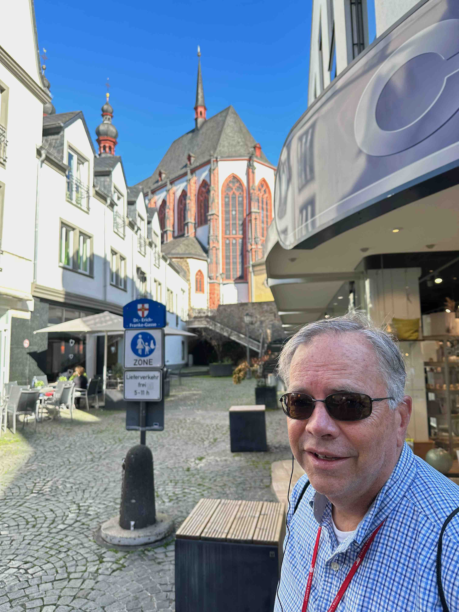

Travel is fatal to prejudice, bigotry, and narrow-mindedness.
We landed and threw ourselves into the Tube; we had mistakenly reserved a hotel room in London for the night when we actually had to be in Amsterdam the next day: Carolyn discovered the scheduling snafu by reviewing dates just before our trip so off we thundered, long flight notwithstanding, to get ourselves post-haste to The Netherlands.
Arrived at St. Pancras station to catch our Eurostar train where we saw the world's longest bar (Searcy's at St. Pancras station). Push the button to order food. Very civilized. Very discreet. Carolyn likes it! This made waiting for the Eurostar to Amsterdam easier to bear by far and, as you can see, galloped along at 200 mph. We had a very civilized meal at high speed: wine, cheese ‐ even a little caviar. And so we arrived in Amsterdam that night, having traversed 4 countries in 18 hours (UK, France, Belgium, Netherlands... at every border crossing our phone plan welcomed us by texting "Hi, it's AT&T. Great news! You have our best international package, and we're delighted at this heaven-sent opportunity to charge you way too much money!"). Hardest part: navigating a train change in Brussels where between English, French, German, and Dutch signs we found track 14B to get on the next correct rocketing train.
After arriving and throwing our travel-tired arms around Beth and Paul (there's magic meeting friends in far away places) we hit the hay. Woke up to a great morning view from the hotel which looked out over the dock where our boat was moored (you can see it just past the roof edge): the night before, we didn't even bother to unpack, falling asleep as soon as our heads hit the pillows.

Sunday, we walked down the dock with Beth and Paul Spangler and boarded the riverboat Royal Viking Kara, an elegant high-tech barge which is, right now as I write at 1 AM, elegantly churning its way upstream somewhere in Germany (we stop at Cologne tomorrow). Yesterday, we worked our way down to Rotterdam and into the Rhine proper, a huge river which flows with tremendous energy: we watched the Kara and all the shipping, eating caviar on the upper deck (my selfie technique never improved). The technologic advances... astonishing. The food ‐ I must take a much more ascetic approach to my intake. More salads, less amuse bouches or I will shortly be fat once again.


We bicycled through the windmills just off Rotterdam and gazed wistfully at the neat, ordered, clean Dutch countryside, pacifically dotted with farm and kine; we returned to eat more elegant food on board; we marveled at the gleaming architecture bordering the Rhine mile after mile and became more and more happy and satisfied ‐ travel is such a gift! The Europeans, it seems to me, have created a lifestyle and infrastructure that frankly eclipse America's and it warms my heart: progress is happening. I took a picture of the Amsterdam Muzikgebouw and sent it off to Conrad with instructions to win a job there.


The first night the Kara sailed I climbed to the bow and watched the boat navigate, gleaming, down a band of dark river water, narrower than the boat is long; the dark was complete, the decks empty and silent, the earth as dark as the bounded river; I remembered a night crossing down to the Dry Tortugas on the sailboat when the wind died, the Gulf became a flat perfect mirror of stars above; sky and sea blended indistinguishably together in one still globe so seamlessly married that reality bent, and curling through the stars a band of porpoise came to investigate and then to swim on, curiosity satisfied. I sat very still and listened to the rhythm of the boat which had not even the beat of a sail to say...

And we have another few weeks of travel to go!
We took an extensive bicycle tour (we became addicted to bicycle tours - you see a lot without walking your feet to the bone). The French/German/Swiss guide was professionally offended after the tour ended when no tips were forthcoming: I thought about explaining to her that we had had, literally, no time to get Euros but just nodded, smilingly, at her aggressive "was there a problem?" while I ducked back on board. Word to the wise - have some cash on hand! Both Chris and I felt bad that we couldn't tip.


 

Upstream from Koblenz the Rhine enters a gorge which features castles surrounded by steep vineyards on every sun-exposed slope above the water: the grapes obviously love the climate there. The castles are sprinkled like broken ancient teeth on every ridge, so we sat on the deck and watched them go by: the weather was spectacular and I ate many a freshly baked oatmeal rasin cookie while gazing at either shore, wondering how cold life must have been in those forts of stone designed to extract tolls from Mideval river traffic by threat of bombardment. After due consideration, I'd have another cookie - they go well with castle gazing, I find.
The Kara docked, at the end of the day, in a gorgeous little town, Rüdesheim am Rhein where Carolyn bought a German shirt in which she delighted: we lounged in the late day heat in their Marktplatz, utterly charmed. Beth hugged a tree on the way back - it's a good old fashioned California Redwood. Turns out the Europeans are enamoured of Redwoods, and you find them all over this part of the world - it fills me with astonishment. Do they know how horrendously big these trees become? And they obviously thrive in this adopted environment... what are they going to do with a tree that grows to 150 meters?
A full week has passed on the boat, and we've gotten chummy with the captain, a huge fantastically friendly Dutchman who has sailed the Rhine for decades, captaining freighters; he showed us the bridge and talked exhaustively about the boat which is truly a technical marvel which has no rudder, just propellers! (truly blew my mind); we've made friends with the waitstaff, one of whom I actually liked, a sweet young man from Italy named David - "David!" I'd yell, when he had our table, "can you get me an avocado?" and he would always oblige, unfailingly gracious. After some questioning, in which he talked fondly about his fiancee, he was whistled back to work by his impatient head waiter. Good luck to David!
We decided we had had enough bus tours and so elected to head to the nearest train station to brave the adventure of navigating from the Rhine to Heidelberg on our own. We had lunch in the square, hiked up the 'small' hill behind the ancient schloss overlooking ye olde downtown, and then found our way back to the boat in the late afternoon which involved the party splitting up to uber back as we were running out of time to risk public transport (European Ubers are 3 man affairs - 5 of us was a no go!). On the way, in trains and buses, the folks around us were delighted to listen to our American English and offered to help - one youngster, going to medical school, told us where and when to go and on what. Helpful, but not so helpful as Das Google, which tells you EXACTLY what vehicle to board, when it's coming, and what number it is: astonishing. Google translate, Google maps, Google Google Google! Life has changed... phones! Thank God for the mobile phone!
It was on this day we discovered Paul's penchant to walk onto/into whatever conveyance or building we were exploring without paying: if caught, he was ready to play the dumb foreigner card and while I didn't get to witness this firsthand, I have no doubt that he would've put on a great exhibition. For the rest of the trip and forevermore, this is now known as 'Spangling' to those in the know (The River Rat cognoscenti).
Another happening: we were starting to get a little anxious about missing the boat, waiting for an Uber ride, and Carolyn, ever the woman of action, impatiently started to thumb a ride from a German driving a van, who looked pretty startled but whose reaction was nothing compared to Chris who yelled "What're you doing?! Are you crazy?" Ha ha - we've had many a post-Heidelberg chuckle over that one: Carolyn thumbing a ride while Chris objects.
Strasbourg was never a city I would have thought of visiting: now I know better! The old town is absolutely charming, with a capital C. We wandered here and there, ate lunch, bought shoes, had a cafe...


Not sure what the girls thought they were going to see, but there you have it: they're peeking!
We swung into the Cathedral, like we did in every town (it's an American affliction) - Strasbourg's is magnificent. Apparently, just before WWII, Hitler visited and admired the windows so much he decided to take them; they were later discovered in a salt mine and fully restored to a cathedral that had been truly shattered during the war. So there's something the little prick did that was actually of service to mankind!

The eBike tour was rather extensive and ended up being a blast. The Kara stopped at a nondescript wharf to let us eBikers off where it was easy for the vendor to deliver 30 bicycles. So we rode down the river for a ways, visited a marina, and then turned left into some sun-baked fields which left Carolyn fuming mad ("why are we stopping here in the sun!" she whispered to me furiously) and rode towards the hills where the Black Forest lay. We stopped for coffee and cake an hour in, and then again for lunch where I cooled my toes, and then we started to ride uphill in earnest. The hills looked deceptively tame, and I rode for quite a ways with the power off until the grade became prohibitive, at which time I turned it on and swept uphill until even the ebike slowed down: steep steep steep it was, and long.
The top, for us, was a farm which, in addition to the mounted cow trophy (apparently a much beloved cow) made a pine needle liquor which, after the heat and the climb, was pure ambrosia. I bought a bottle for Christoff and Tina.
While waiting for the bus to take us back to the boat, we listened to a choir sing in the church just down the mountain road in the late afternoon heat... then back on board with a quick tour of the local church in Breisach, through some locks and so to Basel, the end of the cruise. What a great week!

Off to the next stage of the trip with Christoff and Tina! Exciting, because we're going with them to Budapest and Italy; concerning, in that a 3rd of our month-long trip is over. We've never been on a month-long vacation and we love it: we keep turning to one another and asking "Do you wish this would continue?" and one of the three Americans always shouts "YES!!"
In between the cruise and jetting off to Budapest we had a day so Max took me for a ride - it was fantastiche. He carefully fitted Tina's bike for me, with stern instructions from his father to return it to Tina's settings afterwards: he did a great job - the bike performed better than it's aged rider. We rode over to the next lake, Greifensee, just over the ridge from Zurich, and then rode up to a view so immense the camera couldn't capture it; the world's "longest wooden trough" (Swiss humor at it's finest) greeted us at the top; Max waited patiently for me to pant up behind him. He nodded approvingly at me after the ride: "You're slow, but you keep coming!" The next day, Max rode his bike over the Alps to Rome, with the goal of getting there within 5 days!!!!

Got in a van at 4 AM to go to Budapest! Such a name! It smacks of the east, of the steppes... arrived at the Liszt Ferenc International airport, looked and listened to the impossible language, and started navigating from the airport to town. We smiled at a young man and his wife with 4 or more children in tow, a wagon train of luggage surrounding them: he smiled back and offered us metro tickets into town that he could no longer use, telling us he was from Stockholm and headed back there. A good omen! We took the proferred tickets and promised that we'd call when touring Sweden.

The apartment was classic: an elevator that warranted the warning so we used it only when feeling adventurous or curious; a location in the old center of town with high high ceilings and heat pumps with bright operating blue lights that disturbed one's sleep; 2 bathrooms, one featuring a shower and the other a tub and an ancient white electric hot-water heater; and a pub on the bottom floor where we left our luggage until check-in at 2 PM.
And where we went next was fantastic! Budapest is big sprawling massive city boasting a very masculine architectural sense, eastern style bloc: and the buildings whether delicate or strong are huge. We walked towards the Danube and almost immediately ran into the 'Hungarian State Opera'. Turned a couple of more corners and there was the Danube, in all its glory; and there, planted in front of a hotel, was the first of my seminal seminal musical experiences of our trip.


If I had only heard these guys when I was young and impressionable, I would've played Smetana with some real verve! I understand where Liszt Ferenc (last name first in Hungary) is coming from, not to mention Chopin Frederic... I wonder if my latest favorite pianist, Yunchan Lim, has heard this? Look at the "piano" - it's a dulcimer complete with a square piano steel frame, piano strings, pedals, but no keyboard: you play it with mallets. Wild! I loved it.
After walking all over Pest in the heat and eating a lunch served by a surly waiter, we had to nap. From then on, every time we walked or rode or took the tram past this park we'd beam at each other and exclaim "Our napping park!" In fact, after our nap we woke to find other nappers strewn across this convenient small park right smak dab in the center of town - we started a napping trend.
After Santa Fe last year, Martina suggested we trade places and come over to see Lago Maggiore (an absolutely ginormous lake: it's a thousand feet deep!). Who's gonna turn that down? So off we went to Porto Valtravaglia to spend a week in a deluxe villa.
We walked up to the top of a little hill and saw the goal: lunch in a piazza (Castelvecana, if you please). This turned out to be a bit of a "death march" (quoting Stewart!) experience as we had to slide down the hill to get there. Sleeping at night with the gorgeous European windows open from top to bottom, slanting in, is wonderful: but why no screens? Inevitably, one wakes to the sound of a mosquito buzzing round your ears and in terror, you huddle under the soon to be too hot single-body quit on the single-body mattress on the bed frame that has square hard edges designed to do utmost damage to your naked shins in the dark of night. The Europeans may be ahead of us in some ways, but they're behind us when it comes to window screens and comfortable bedding!
We went to Lenzburg with no expectations: it was a stop on the way to a party the Schuberts invited us to. "Oh", we said self-deprecatingly, "don't feel constrained to take us to your party. What a sad bore we Americans will be for you there!" "No no no no no no no" responded Christoph (please note the 7 serial no's which are a charlming speech pattern of his) and Tina, "we want you to come and on ther way we'll tour a castle!" "OK" we agreed, and by the end of the castle tour I was totally bemused and dazzled. Maps and chest and Midieval treasures from floor to ceiling... what a place!
Taking the ferry back from the Lindt chocolate factory...
And then off to the opera for dinner and Il Turco (Rossini) after an afternoon nap (looks like Christoph didn't get one - methinks he's working too hard) on the porch and a swim!


My birthday! 65!!! Medicare, here I come! The Zurich Swim Team went swimming, despite the cooler temps (Tina's always in first and out first, because she HATES being cold.)

This was, quite simply, an epic day amongst epic days. Maybe, because I'm older and greyer and have survived the frailties of my flesh I appreciate more, but there you have it: I do. Met Jonas at his work and almost cried, blubbering, while giving him a hello hug: glad to see him doing obviously well, working at a big company to nurture a family all his own. We left Jonas after eating Google's lunch to wander through a market, a museum, and then accidentally into St. Paul's where we sat down for an Anglican (as it turns out) service in the apse lit by lamps which somehow make the space more solemn and majestic than it already is: they light up your personal space which accentuates your feeling of connectedness to the whole. There, in cathedral, softly lit, I had yet another seminal musical experience: the monks came out and sang; the grand organ was played; the cathedral echoed back ringing overtones; I bathed my forehead in the musically religious experience and prayed it would never end; the countertenors obliged me with yet another responsorial then atiphonal exchange anchored by basses and organ, itself a cathedral. A monk walked solemnly out and played, standing, perfectly, the organ console. St. Paul is immense. Anglicans preach primarily by chant and ritual, the specifics of sermon lost in echoing immensity and further softened by English accent: I can see why Luther and his personal approach held such sway but I, on the other hand, loved that the Anglicans left me alone with the sound and ritual to create as and when I wanted, and thus I did, in fact, have a deeply religious experience.


Only downside: I left my hat on the plane to London, and my bedside readers on my side of the bed in Zurich. Maybe pick up a Peaky Blinders replacement. The readers? Have Tina give them to me on our next trip to Europe. 😄
And so the trip comes to an end, beginning where it started, instead of walking to walking from our VRBO to Paddington station...